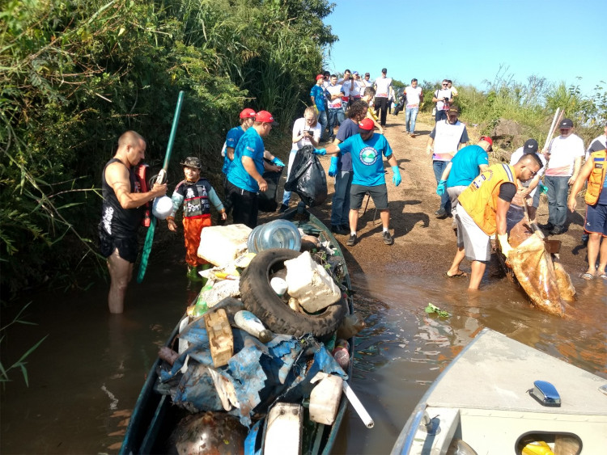

Nascente e percurso que ele faz
O Rio Taquari nasce na Serra Geral, próximo à cidade de São José dos Ausentes, no nordeste do estado do Rio Grande do Sul. A partir de sua nascente, o rio segue um percurso de aproximadamente 400 km, atravessando uma extensa área do estado. Ele percorre municípios como Lajeado, Estrela, Taquari, Arroio do Meio, Venâncio Aires, Santa Cruz do Sul, Cachoeira do Sul, entre outros, antes de desaguar no Rio Jacuí, próximo à cidade de Cachoeira do Sul.
Problemas do rio
O Rio Taquari enfrenta vários problemas ambientais, como a poluição proveniente de esgotos domésticos e industriais lançados diretamente nas águas do rio. Além disso, o assoreamento, resultado do acúmulo de sedimentos no leito do rio, é outro desafio enfrentado.
O uso inadequado do solo, principalmente na agricultura, também pode levar à erosão e ao carreamento de agrotóxicos e fertilizantes para o rio.
Características
Bacia Hidrográfica
O Rio Taquari faz parte da bacia hidrográfica do Rio Jacuí. Sua bacia hidrográfica abrange uma área de aproximadamente 20.000 km², sendo uma das maiores do estado. A região é caracterizada por um relevo variado, com áreas de planalto e vales.

Regime de Chuvas
O regime de chuvas na região do Rio Taquari é influenciado pelas massas de ar úmidas provenientes do oceano Atlântico. O período mais chuvoso ocorre durante a primavera e o verão, aumentando o volume de água do rio. As cheias são um fenômeno recorrente e podem causar impactos na região.